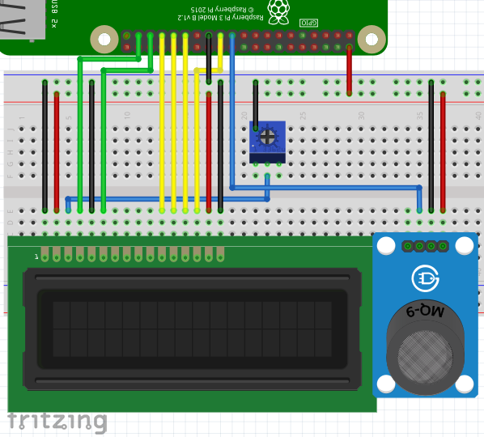

Once upon a time, I was outside my dad’s office, and I smell something wrong: a hard-to-breathe gas smell. I immediately rushed to a worker nearby, and found out the cause is a leaking gas tube.
Therefore, combining my interest in computers in general and the incident, I decided to design my very own gas detector that comes with some sort of IoT functionality.
Make a IoT-enabled, easy to DIY, modular and commercially viable product that detects flammable gas and carbon monoxide, and warns the owner under abnormal circumstances.
You will need to know:
Breadboard Wiring:

16x2 LCD Pinout

Raspberry Pi 4 GPIO Pinout:

I am a advenced Linux user myself, so I chose to install Arch Linux ARM on the Pi. Here is how I installed it:
Download a modified version of Arch Linux ARM image that is built for aarch64 (64-bit ARM) architecture.
Extract the tarball.
# dd if=ArchLinuxARM-rpi-4-aarch64-2020-05-06.tar.gz of=/dev/sdX status=progessUnmount the SD card and insert it to the Pi.
Login as root, whose password is also root.
Add a user repository for Pi’s aarch64 kernals.
/etc/pacman.conf
[raspi_aarch64]
SigLevel = Optional TrustAll
Server = http://107.145.175.222:8000/my_repo/aarch64Do a full system upgrade, and install some programming tools
# pacman -Syyuu neovim ranger python-pip networkmanager cronieConfigure NetworkManager
# systemctl enable --now NetworkManager.service
# nmtuiInstall Python modules
# pip install -U pip RPi.GPIO RPLCD fbchatEnable auto login
# systemctl edit getty@tty1
[Service]
ExecStart=
ExecStart=-/usr/bin/agetty --autologin username --noclear %I $TERMRunning A Python Script At Boot Using Cron
# systemctl enable --now cronie.service
# sudo crontab -e
@reboot python /home/root/main.py &Create a dummy Facebook and Google account and set them up.
# ~/main.py
import RPi.GPIO as GPIO
from RPLCD import CharLCD
import time
import socket
import threading
from fbchat import Client
from fbchat.models import *
import sys
debug = False
recieveID = '100026934047664' # Chengxuan He
loginEmail = 'yorkpasquale@gmail.com' # york.pasquale
loginPwd = 'KGLuU4Eg'
# https://stackoverflow.com/questions/166506/finding-local-ip-addresses-using-pythons-stdlib
def ip_addr(): return [l for l in ([ip for ip in socket.gethostbyname_ex(socket.gethostname())[2] if not ip.startswith("127.")][:1], [
[(s.connect(('8.8.8.8', 53)), s.getsockname()[0], s.close()) for s in [socket.socket(socket.AF_INET, socket.SOCK_DGRAM)]][0][1]]) if l][0][0]
def onMQ9FallingEdge(channel):
emergencyMessage = '🔥🔥🔥 WARNING: FLAMMABLE GAS CONCENTRATION TOO HIGH! 🔥🔥🔥'
client.send(Message(text=emergencyMessage), thread_id=client.uid)
client.send(Message(text=emergencyMessage), thread_id=recieveID)
class EchoBot(Client):
def onMessage(self, author_id, message_object, thread_id, thread_type, **kwargs):
self.markAsDelivered(thread_id, message_object.uid)
self.markAsRead(thread_id)
print("{} from {} in {}".format(
message_object, thread_id, thread_type.name))
# If you're not the author, echo
if author_id != self.uid:
self.send(Message(text='Time: {}\nMode: {}\nLocal IP address: {}\nMQ-9 Status: {}\nFacebok Messenger: {}'
.format(time.strftime('%Y-%m-%d %H:%M:%S', time.localtime()),
'Debug' if debug else 'Normal',
ip_addr(),
'Safe' if GPIO.input(11) else 'Warn',
'Connected' if chat_thread.is_alive() else 'Error')),
thread_id=thread_id,
thread_type=thread_type)
try:
client = EchoBot(loginEmail, loginPwd)
except:
isLoggedIn = False
chat_thread = threading.Thread(target=client.listen)
chat_thread.start()
GPIO.setwarnings(False)
lcd = CharLCD(numbering_mode=GPIO.BOARD, cols=16, rows=2,
pin_rs=37, pin_e=35, pins_data=[33, 31, 29, 23])
GPIO.setup(11, GPIO.IN) # MQ-9 Dout
GPIO.add_event_detect(
11, GPIO.FALLING, callback=onMQ9FallingEdge, bouncetime=2000)
try:
blinkState = True
running = True
while running:
try:
lcd.write_string(('R' if blinkState else ' ') + ' ' + ip_addr())
except OSError:
lcd.clear()
lcd.write_string(('E' if blinkState else ' ') + ' No IP Address')
lcd.crlf()
lcd.write_string('MQ-9:' + ('Safe' if GPIO.input(11) else 'Warn'))
lcd.write_string(' FB:' + ('OK' if chat_thread.is_alive() else 'NO'))
blinkState = not blinkState
time.sleep(1)
lcd.clear()
except (KeyboardInterrupt, EOFError):
running = False
finally:
lcd.clear()
lcd.write_string('E ' + ip_addr() + '\n\rPy Not Running')
GPIO.cleanup()